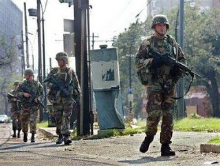
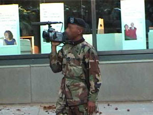
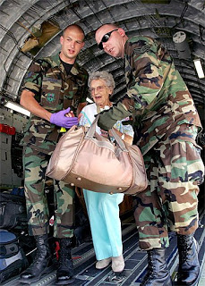

The military occupation of New Orleans, post-Katrina.
Safety from external danger is the most powerful director of national conduct. Even the ardent love of liberty will, after a time, give way to its dictates. The violent destruction of life and property incident to war, the continual effort and alarm attendant on a state of continual danger, will compel nations the most attached to liberty to resort for repose and security to institutions which have a tendency to destroy their civil and political rights. To be more safe, they at length become willing to run the risk of being less free.
Federalist Paper No. 8, in which Alexander Hamilton displayed an atypical ardor to defend liberty against state power.
“We no longer have a civilian-led government.”
This ominous conclusion comes to us from Thomas A. Schweich, who held the title of deputy assistant secretary of state for international law enforcement affairs in the Bush Regime, by way of a December 21 Washington Post op-ed column. Lamenting “the silent military coup d’etat that has been steadily gaining ground below the radar screen of most Americans and the media,” Schweich describes the infusion of the military “into a striking number of aspects of civilian government” as “the most unnerving legacy of the Bush administration.”
Schweich is not an advocate of limited-government who managed to burrow deeply into the Bu’ushist Welfare/Warfare State; he is an advocate of “soft power” imperialism, the supposedly benign variety that focuses more on hectoring foreigners about their shortcomings, rather than unceremoniously bombing them into blood pudding. Oh, sure – even “soft power” imperialism involves the threat and occasional practice of bombing, but usually only amid cries of anguished reluctance following the performance of the proper multilateralist sacraments. (For useful examples, consult the Clinton-era bombing campaigns in the former Yugoslavia.)
Schweich seems particularly miffed that the military shouldered aside the State Department’s efforts to train civilian “law enforcement” personnel in Iraq and Afghanistan, as well as the Pentagon’s habit of Bogarting all of the boodle set aside for “reconstruction” projects.
But even though his protests have the sectarian flavor of bureaucratic in-fighting, Scweich validates his shocking announcement of the demise of civilian government with some very solid examples. For instance, the military’s domination of law enforcement training in Iraq and Afghanistan have created police forces that “have been unnecessarily militarized – producing police officers who look more like militia members than ordinary beat cops. These forces now risk becoming paramilitary groups, well armed with US equipment, that could run roughshod” over civilian governments.
While this and other “military takeovers of civilian functions” took place “a long distance from home,” Schweich elaborates, the same all-devouring militarism is at work here as well.
Witness the huge and expanding role played by the military in narcotics enforcement, including the hugely expensive “Merida Initiative” through which the Bush Regime has collaborated with Mexico’s narcotics syndicates (which are, to use a common term on this side of the border, public-private partnerships) to propagate unprecedented violence and misery in that country.
The most important example Schweich lists is the Pentagon’s plan “to deploy 20,000 U.S. soldiers inside our borders by 2011, ostensibly to help state and local officials respond to terrorist attacks or other catastrophes. But that mission could easily spill over from emergency counterterrorism work into border-patrol efforts, intelligence gathering and law enforcement efforts – which would run smack into the Posse Comitatus Act…. So the generals are not only dominating our government activities abroad, at our borders and in Washington, but they also seem to intend to spread out across the heartland of America.”
While Schweich’s concern and candor do him credit, his warnings are tantamount to urging that we secure the barn door long after the prize stallion has fled, been butchered, and graced a Frenchman’s dinner table.
The military “spill-over” into domestic law enforcement that he warns against began as a trickle in 1981 with passage of the Military Cooperation with Civilian Law Enforcement Act. That trickle is now a cascade as voluminous and consistent of any found in Niagara Falls. Once again, this is chiefly – but not entirely – due to the so-called War on Drugs.
The eyes of the military are upon you: Active-duty military personnel collect photographs of anti-war activists during a 2002 Washington, D.C. protest against the then-impending Iraq war (above and below right).
For some time, military involvement in domestic intelligence gathering has included personal surveillance of political activists; more recently, this has expanded to the use of spy satellites to monitor political protests on behalf of militarized law enforcement bodies. While Schweich is properly alarmed by the way the Pentagon has created Iraqi and Afghan police forces that are little more than miniature armies of occupation, he apparently hasn’t noticed that the same process is well underway here in the United States as well.
In some ways, Schweich’s jeremiad is a good update and companion piece to Brig. Gen. Charles J. Dunlap’s prescient essay “The Origins of the American Military Coup of 2012,” published in the Winter 1992-93 issue of the U.S. Army War College journal Parameters.

Written in the form of a smuggled prison letter composed by “Prisoner 222305759,” condemned to death for “treason” by the American military junta of Gen. E.T. Brutus, Dunlap’s essay described many trends that he feared would culminate in “a military that controls [the American] government and one that, ironically, can’t fight.”
As government corruption and ineptitude grew, “The one institution of government in which people retained faith was the military,” explained Dunlap’s literary stand-in. The military was thus burdened with countless tasks unrelated to warfare – from law enforcement, to supplementing the work of doctors and teachers, from environmental preservation efforts to bolstering the financially stricken airline industry. (Dunlap, incidentally, extensively documents how the military was either active, or planning to become involved, in all of those missions by the early 1990s.)
Likewise, the military’s missions abroad were increasingly Operations Other Than War (OOTW), a term that came into vogue subsequent to publication of Dunlap’s essay. At the same time, a cultural dissonance grew between the military and the public it was supposedly serving.

The structural defects in this new model military were displayed to painful effect in what the author describes (by way of prediction, remember) as “the wretched performance of our forces in the Second Gulf War,” particularly following Iran’s intervention in 2010: “Preoccupation with humanitarian duties, narcotics interdiction, and all the rest of the peripheral missions left the military unfit to engage an authentic military opponent.”
While the military was no longer well-suited to fight and win wars (including, of course, patently unjust wars of aggression), its subtle and thoroughgoing integration into every element of domestic life made it perfectly suited to carry out a coup: “Eventually, people became acclimated to seeing uniformed military personnel patrolling their neighborhood. Now troops are an adjunct to almost all police forces in the country. In many of the areas where much of our burgeoning population of elderly Americans live – [military dictator] Brutus calls them `National Security Zones’ – the military is often the only law enforcement agency. Consequently, the military was ideally positioned in thousands of communities to support the coup.”
Very little of consequence separates the speculative world described by Dunlap from the one in which we presently live. One institutional impediment is the Posse Comitatus Act (or whatever remains of it), which was intended to prevent direct involvement of the military in domestic law enforcement.
But this measure, which was always a tissue-paper barricade at best, is all but extinct as we near the end of the Bush era. And the ranks of military scholars are planted thickly with people devising arguments to destroy whatever may remain of the Posse Comitatus proscriptions.
In a paper published by the US Army War College in early 2006, Lt. Col. Mark C. Weston of the U.S. Air Force Reserve points out that the Posse Comitatus Act has been perforated with “exceptions” practically since it was passed in 1878. (Just weeks after signing the act – passage of which was part of a deal that ensured his presidency -- Rutherford B. Hayes deployed the Army to carry out police functions in New Mexico.)
One of the biggest exceptions deals with what could be called the use of “civilian” police as military proxies, since the Pentagon is permitted “to provide equipment, transportation, training, supplies, and services to law enforcement officials as long as it does not directly and actively participate in law enforcement tasks,” writes Weston. Which is to say that it’s permissible to militarize the police, as long as troops aren’t actually the ones pulling triggers and conducting arrests. This is, once again, exactly the same procedure being used to create the Afghan and Iraqi “militias” described by Thomas Schweich.
There are six formal exceptions to the Posse Comitatus Act listed in Title 32, Sec. 215.4 of the Code of Federal Regulations, Weston writes. To that list, he rather audaciously adds “One final exception worthy of discussion [namely] the concept of martial law.” Referring to the Supreme Court’s 1866 Ex Parte Milligan decision, Weston insists that martial law can properly be said to exist only in “the absence of order, courts, and constitution…. Martial law is the use of force by the military to maintain order by acting as the police, the court, and the legislature…. If the courts are open then [use of the term] martial law is not appropriate.”
Most domestic deployments of the military don't cross the threshold of martial law, Weston maintains, and he eagerly recommends making it easier for the military to carry out such missions by repealing the Posse Comitatus Act (or PCA). From Weston’s perspective, the PCA, which was never a good idea, has long since fallen into desuetude. He insists that the Act should either be repealed outright or modified in such a fashion as to make it entirely inconsequential.
Posse Comitatus, Weston writes, is “a significant obstacle to unified action on homeland security … an impediment to agility and adaptability of the military to national defense … [a hindrance to] national values and national purpose.” Yet he prefers to “modify” the Act rather than abolish it, apparently to maintain – for now – the useful fiction that military and police powers remain separate, with civilian officials firmly in control of the former.
In an October 2000 essay entitled “The Myth of Posse Comitatus,” Major Craig T. Trebilcock, a JAG officer in the U.S. Army Reserve offers an assessment quite similar to that of Lt. Col. Weston: The PCA is useless but not harmless, and best ignored if it can’t be dispensed with.
The only value of the PCA, according to Trebilcock, is the fact that “it remains a deterrent to prevent the unauthorized deployment of troops at the local level in response to what is purely a civilian law enforcement matter.” For example, it can result in administrative punishment or even criminal prosecution of “a lower-level commander who uses military forces to pursue a common felon or to conduct sobriety checkpoints off of a federal military post.”
As of December 12 – when active-duty U.S. Marines conducted a joint highway sobriety checkpoint with California Highway Patrol officers – that example can be crossed off Trebilcock’s list.
In his book An Empire Wilderness, Robert D. Kaplan describes a strategic planning session held at Ft. Leavenworth’s Battle Command Training Program shortly after the April 1995 Oklahoma City Bombing (a tragedy directly facilitated by several of the Regime’s three-letter agencies). One of the participants, a Marine Major named Craig Tucker, predicted that the threat of terrorism and domestic turmoil suggested that the military would have to “go domestic.”
God forgive us, if He can: Iraqi mourners display the lifeless body of an infant killed during a chemical weapons attack by US occupation troops. The burn marks on the child's body are the result of an attack using white phosphorous munitions. In a 1932 essay on domestic military deployments, Gen. George S. Patton -- who ironically took care to avoid needless civilian casualties during World War II -- recommended the use of white phosphorous to suppress insurrection.
While that prediction has been fulfilled, the process has yet to be fully consummated. On the continuum described by none other than Gen. George S. Patton – who considered domestic military deployment as the “most distasteful” form of service – we are presently somewhere between routine involvement of military personnel “in connection with Domestic Disturbances” and “Martial Law.” That continuum ends with “Military Government,” which differs from Martial Law in that it represents the complete abolition of civilian authority, as opposed to the enforcement of a civilian ruling elite’s will through direct military force.
In administering either Martial Law or Military Government, Patton – predictably enough – prescribed the pitiless application of lethal force. He digested his doctrine of domestic military missions into what he called “The Law and the Prophets of Riot Duty,” a canon that includes the following directives:
*“Take no orders from civil officials -- federal, state, or municipal.”
*“You may and should cooperate with police or state troops who may be present; but you and not they are the judge of the amount and character of this cooperation.”
*“Should some orator start haranguing the crowd and inciting them to violence, grab him even if it brings on a local, small fight. Small fights are better than big ones. Words cunningly chosen change crowds into mobs.”
*“Warn newspapers, theaters, and churches that if they encourage the mob, they are guilty of aiding them and that their leaders will be held personally accountable. Freedom of the press cannot be construed as `license to encourage’ the armed enemies of the United States of America. An armed mob resisting federal troops is an armed enemy. To aid an enemy is TREASON. This may not be the `law,’ but it is fact. When blood starts running, the law stops.”
*“If you have captured a dangerous agitator and some `misguided’ federal judge issues a writ of Habeas Corpus for him, try to see the judge to find out what he is liable to do…. There’s always the danger that the man might attempt to escape. If he does, see that he at least falls out of ranks before you shoot him. To be soft hearted might mean death to your men. After all, WAR IS WAR.”
*“As in all military operations, information is vital. By the use of detectives, soldiers in civilian clothes, and friendly citizens, get all possible information about the condition within the city.”
*“The use of gas is paramount…. While tear gas is effective, it should be backed up with vomiting gas.”
*"Although white phosphorous is incendiary, it is useful in forming a screen for the attack of barricades and defended houses.”
*“If you must fire, DO A GOOD JOB. A few casualties become martyrs; a large number becomes an object lesson.”

These admonitions, remember, were issued with respect to the use of military force against American citizens by a man revered as a patriotic hero by millions (including some lately given to second thoughts) – and who, ironically enough, was almost certainly assassinated by the same State he served with such ruthlessness.
Patton's model for a domestic counter-insurgency "war" during the last depression would probably resemble the approach used by the military in dealing with serious internal upheaval in the depression that has just begun.
Significantly, Patton’s tactics track very closely with those employed to enforce US occupation of Iraq – including the use of hideous white phosphorous munitions. That occupation is supposedly slated to end in 2011 – the same year, incidentally, when the military’s 20,000-man Homeland Security force is supposed to be fully deployed.
If the conclusion voiced by Thomas Schweich and other very credible analysts is correct – if, indeed, we are living under a de facto military junta , the nature of which will become clear as the economic collapse strips away all politically comfortable pretenses – we may soon learn, in the most painful way possible, that our military missions abroad have been carefully training the occupation force that will extinguish whatever remains of our liberty.
Update: Are you prepared to be "quelled" by the military?
In the installment immediately preceding this one ("`Question 46,' Revisited"), I mentioned a DUI/license checkpoint carried out recently as a joint effort by the California Highway Patrol and personnel from the Marine combat station at Twentynine Palms, California. The Marines were supposedly on hand as mere "observers."
That explanation struck me as implausible, or at least insufficient. Of course, there is a sense in which Marines, or other military personnel, could be invited to participate in ordinary law enforcement operations both to "observe" and to intimidate. This is illustrated by a letter published last July in the Colorado Springs Independent, which is reproduced below in full:
I feel compelled to notify fellow citizens of what is now occurring during the early morning hours in our downtown streets. This past Friday, July 11, after an evening at Rum Bay, I was met with an unexpected and disturbing sight. It was not the ever-increasing number of police officers that I found so disturbing. It was the three Fort Carson Army soldiers in full camo, armed with 9mm handguns, standing in the middle of Tejon Street with Colorado Springs police as people exited the night clubs.
I knew instantly what was occurring, but delayed my departure to watch and confirm my suspicions. After 30 minutes I approached an officer and inquired, "With all due respect, sir, why do we have armed soldiers in our streets?" He smirked slightly and responded in a more serious tone, "There are people that do certain things that need to be stopped; we started a program with the local base to bring some soldiers out with us to quell those things that go on ... even just their presence has a quelling effect."
That confirmed my suspicion: It was solely to create a sense of fear and intimidate the people under direction of the CSPD.
The Posse Comitatus Act was passed in 1878 to prevent our military from being used for general civilian police activities. Since the U.S. Patriot Act, and the Defense Authorization Act, virtually all aspects of the Posse Act were overwritten but directed at events of large civil disobedience, natural disasters or terrorist threats.
On this evening there were no organized masses, just the normal instances of confrontation between random people. In short, what CSPD is doing is illegal, and the CSPD and our local government need to be `quelled' of thinking that such blatant violations of civil law can continue.
— Justin Blough
Colorado Springs
I suspect, but cannot prove -- yet -- that this kind of gradual but accelerating militarization of routine police functions is becoming quite commonplace, largely at the invitation of local law enforcement bodies.
 On sale now.
On sale now.Dum spiro, pugno!